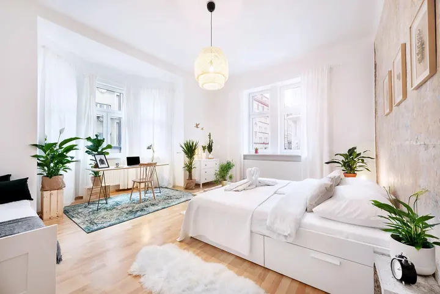
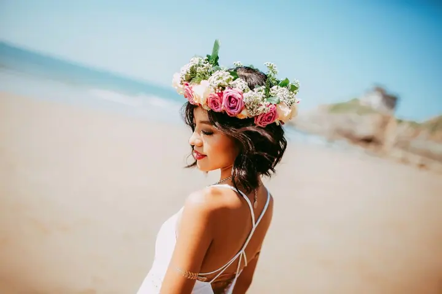
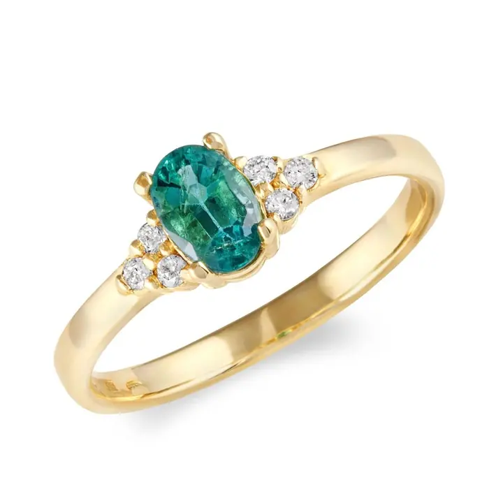

01 / 04
Focení nemovitostí
Nafotím byt, dům, vilu i výhled z okna tak, aby se nedostatky proměnily v přednosti. Rád navrhnu homestaging, světlo i celkovou stylizaci, což se hodí pro prodej i pro dlouhodobé a krátkodobé pronájmy.
Zeptat se na termín→




Nemovitosti a interiéry v tom nejlepším světle
Zeptat se na termín →(01) Ahoj
Jmenuji se Jan Havlíček a fotím nemovitosti , hotely a restaurace i produkty v Praze a ve Středních Čechách. Moje fotografie vám udělají radost a pomůžou vám i v prodeji.
(02) Co fotím
01 / 04
Nafotím byt, dům, vilu i výhled z okna tak, aby se nedostatky proměnily v přednosti. Rád navrhnu homestaging, světlo i celkovou stylizaci, což se hodí pro prodej i pro dlouhodobé a krátkodobé pronájmy.
Zeptat se na termín→02 / 04
Pokoj, prostředí, drink nebo jídlo musí být na fotce estetickým a gurmánským zážitkem. Jen tak k vám zákazník poprvé přijde.
Zeptat se na termín→03 / 04
Fotky na web, na papír nebo na billboard, od šperku až po nákladní auta. Jsem detailista a mám rád, když je fotka čistá a podpoří prodej.
Zeptat se na termín→Dále nabízím
Reprezentativní portréty na životopis, do hlavičky e-mailu nebo na firemní stránky. Moje dvorní vizážistka vás připraví a já vás vyfotím v tom nejlepším světle.
↗(04) Postup
Od první zprávy po hotovou galerii.
Krok 1 z 4
Předem si domluvíme orientační počet snímků, jejich velikost a účel užití. U nemovitostí vám rád navrhnu homestaging, světlo i stylizaci.
Krok 2 z 4
Přijedu za vámi a během focení pořídím zhruba trojnásobný počet fotografií, než kolik jich budete potřebovat.
Krok 3 z 4
Všechny snímky vám pošlu v náhledovém formátu s vodoznakem a vy si v klidu vyberete ty, které se vám líbí.
Krok 4 z 4
Upravené fotografie v požadované kvalitě vám pošlu přes internetové úložiště do 5 dnů od výběru.

Díky fotce se nedostatky promění v přednosti.
(05) Za objektivem
Jsem profesionální fotograf, ale vždycky jsem nebyl. Měl jsem ve vínku stavařinu, a tak jsem ji studoval a pak praktikoval. Pak jsem potřeboval cítit svobodu a respekt, po večerech jsem vystudoval Pražskou fotografickou školu a dostal se tam, kde jsem dnes.
Při spolupráci mi nejlépe funguje partnerský přístup. Nemám rád škatulky, všichni jsme prostě lidé a není nic jednoduššího, než se domluvit. Rád vám navrhnu homestaging, světlo i stylizaci a propojím své kontakty a zkušenosti tak, abych vám ušetřil práci. Nikdy nezůstane jen u fotografie.
Těší mě, když můžu být u zrodu něčeho nového a podpořit lokální produkci, která staví na poctivé práci. A pak je tu Forrest, můj australský ovčák. Fotím ho všude, i když jdeme jen na procházku, a tak si mě našlo i focení psů.
Jan
Jan Havlíček · Fotograf nemovitostí, interiérů a produktů
Výsledná cena se stanoví podle počtu retušovaných fotografií. Proto si před focením domluvíme orientační počet snímků, jejich velikost a účel.
Můj region je Praha a Střední Čechy, ale přijedu za vámi i kamkoli jinam. Na všem se domluvíme.
Ano, rád vám navrhnu homestaging, světlo i celkovou stylizaci. Hodí se to pro prodej i pro dlouhodobé a krátkodobé pronájmy.
Neupravené fotografie z osobních důvodů neposkytuji. Dostanete pečlivě upravené snímky, které si sami vyberete z náhledů.
(07) Kontakt
Napište pár vět o tom, co si představujete, a termín, který se vám hodí.